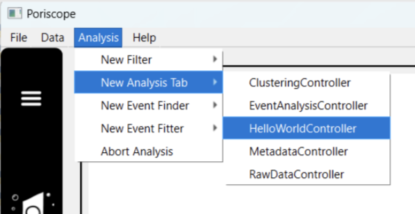
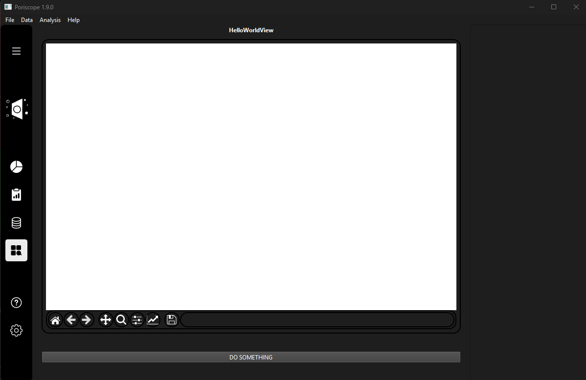

Keeping It Minimal: HelloWorld Tutorial¶
If you just want to get started and make sure everything works, the Keeping It Minimal: HelloWorld Tutorial tab is a good place to begin. It is the smallest analysis tab that is still a real one: it loads, it appears in the Analysis menu, it draws a plot canvas, and its single button travels the whole path a real control takes and reports that it got there.
You do not write it. scripts/new_plugin.py does:
python scripts/new_plugin.py AnalysisTab HelloWorld --user
--user writes into your user plugin folder, so nothing lands in the repository and you
can delete it afterwards by deleting four files. Restart Poriscope and
HelloWorldController is in the Analysis menu.
Note
Every code block on this page is included directly from the files the generator writes,
which live at docs/source/_static/examples/analysis_tabs/. They are the real output,
checked by the same black and ruff runs as the rest of the repository. Nothing
regenerates them automatically, so when the generator changes, rewrite them with
python scripts/new_plugin.py AnalysisTab HelloWorld --output-dir
docs/source/_static/examples/analysis_tabs --author "Poriscope contributors".
What You Get¶
Four files. The first three are the MVC triad described in Ready to Build Your Own Plugin?; the fourth is the panel of controls that sits under the plot.
File |
What it is for |
|---|---|
|
Owns the tab. The only one of the four Poriscope instantiates directly. |
|
Holds the tab’s data and does its computation. Empty here — there is none yet. |
|
Lays out the widgets and draws the plot. |
|
The controls panel: the widgets a user actually operates. |
Every method carries the docstring copied out of the base class that declares it, so the contract you have to satisfy is in front of you rather than in another file.
The Controller¶
The Controller is the file to open first, because it names the other two thirds of the
triad. _init is written for you rather than left as a # TODO: MetaController
connects the View and the Model to each other the instant _init returns, so a tab that
does not build them both cannot be constructed at all.
@inherit_docstrings
class HelloWorldController(MetaController):
"""
TODO: describe what the HelloWorld tab does.
This is its Controller, which owns the tab's logic and connects its View to its Model.
"""
logger = logging.getLogger(__name__)
# private API, must be implemented by subclasses
@log(logger=logger)
@override
def _init(self) -> None:
"""
Build this tab's View and Model, and do any other setup the tab needs.
Assigning both ``self.view`` and ``self.model`` is required rather than
conventional: the constructor calls this and then immediately connects the two to
each other, so leaving either unset raises ``AttributeError`` before the tab
exists. kwargs given to the base constructor are available as attributes by the
time this runs.
"""
self.view = HelloWorldView()
self.model = HelloWorldModel()
@log(logger=logger)
@override
def _setup_connections(self) -> None:
"""
Set up any local connections between the subordinate view and model
"""
# TODO: implement _setup_connections
pass
_setup_connections is where your View’s own signals meet your Controller’s slots. It is
empty here because this tab has no logic to connect yet.
The View¶
Two of the View’s methods are written out rather than stubbed. The first is
_build_controls, which hands your controls panel back to the base — the base then wires
its four signals and places it for you:
@log(logger=logger)
@override
def _build_controls(self) -> MetaControls:
"""
Build this tab's controls panel and return it.
The subclass also stores it under whatever name the rest of that tab uses -
``self.metadatacontrols``, ``self.rawdatacontrols`` and so on - because those
names appear throughout each tab and in its saved action history. This hook
only has to hand the widget back, so the base can wire it and place it.
Concrete rather than abstract, returning an empty panel, so that a tab which
lays out its own control area can override ``_set_control_area`` instead and
never implement this. Making it abstract would leave such a tab uninstantiable.
Being concrete is also why ``scripts/new_plugin.py`` writes an override rather
than leaving it to be discovered: the default is legal and constructs fine, so a
tab that does not override it simply shows an empty strip under its plot with
nothing to say which method fills it.
:return: the tab's controls panel
:rtype: MetaControls
"""
self.helloworldcontrols = HelloWorldControls()
return self.helloworldcontrols
The second is handle_parameter_change, which is where a control action arrives. Every
shipped tab writes it the same way — read args[0] into parameters, then branch on
action_name — and the generated one has a single branch matching the single action the
panel emits:
@log(logger=logger)
@override
def handle_parameter_change(
self, submodel_name: str, action_name: str, args: tuple
) -> None:
"""
React to an action the tab's controls panel has emitted.
Abstract because ``_set_control_area`` connects the panel's ``actionTriggered``
signal straight to it while the View is still being constructed, so a tab that
does not provide it raises ``AttributeError`` out of ``__init__`` before it can
ever be shown. Declaring it here is what turns that into a refusal to define the
class at all, which is the only form of the failure that names the cause. The
three sibling handlers ``_set_control_area`` connects beside it -
``handle_edit_triggered``, ``handle_add_triggered`` and ``handle_delete_triggered``
- are concrete on this class and need no implementation.
A tab that lays out its own control area by overriding ``_set_control_area``
never has this connected, and may implement it as a no-op.
:param submodel_name: Name of the controls submodel the action came from.
:type submodel_name: str
:param action_name: Identifier of the action to perform.
:type action_name: str
:param args: The action's arguments, as the controls panel packed them.
:type args: tuple
:return: None
:rtype: None
"""
parameters = args[0]
# TODO: one branch per action name your controls panel emits
if action_name == "do_something":
self.add_text_to_display.emit(
f"HelloWorld received {action_name} carrying {parameters}",
self.__class__.__name__,
)
else:
self.logger.warning(
f"HelloWorldView has no handler for the action {action_name!r}"
)
The else matters more than it looks. Renaming an action in the panel and forgetting to
rename it here is the one mistake this dispatch shape invites, and without the else the
press would simply do nothing.
The remaining View methods — _init, _reset_actions, update_available_plugins and
notify_plugin_state_changed — are stubs marked # TODO, each carrying the contract it
has to satisfy. See MetaView as a Base Class for what each one is for.
The controls panel¶
HelloWorldControls is the one generated file that is not copied out of a base class.
MetaControls is a plain QWidget that gives you widget factories and signals but
declares none of the methods it expects you to write, so the generator writes them out:
def setupUi(self) -> None:
"""
Lay out this panel's widgets.
The base builds the plain ones for you with the font and sizing already applied:
``createLabel``, ``create_comboBox`` and ``createButton``, plus
``create_info_button``, ``create_add_button`` and ``create_delete_button`` for the
pencil, plus and trash buttons that sit beside a plugin combobox.
"""
# TODO: replace this button with the controls your tab needs
layout = QVBoxLayout(self)
self.helloworld_button = self.createButton(self, "DO SOMETHING")
layout.addWidget(self.helloworld_button)
def _on_action_requested(self) -> None:
"""
Turn a button press into a request for the tab's Controller.
``actionTriggered`` is the signal that carries work out of this panel.
``MetaView._set_control_area`` connects it to the View's
``handle_parameter_change``, so the action name given here is the string that
method has to recognise.
"""
self.actionTriggered.emit(
self.__class__.__name__, "do_something", (self.collect_parameters(),)
)
actionTriggered is the signal that carries work out of the panel, and
MetaView._set_control_area has already connected it to your View’s
handle_parameter_change. That connection is the one link in the chain you do not write.
What You’ll See¶


HelloWorld in the Analysis Menu — once the plugin is loaded, it appears as a selectable tab in the analysis menu.¶
Open it and you get this:


The generated tab, before you have edited anything — an empty plot canvas with its navigation toolbar, and the controls panel beneath holding the one generated button.¶
Note
The Analysis menu lists the Controller name, HelloWorldController, because that
is the class Poriscope instantiates. The tab’s own header reads HelloWorldView,
because the header is the name of the widget the Controller built. Same tab, two names,
and it is worth knowing which is which before you go looking for one of them.
Now press DO SOMETHING. A line appears on the status panel naming the action and the (empty) parameters that came with it.
That message is the point of the whole example. It means the panel was built, the base connected it, the signal carried, your View’s handler ran, and the message it emitted was relayed all the way back to the shell. Every one of those links is working before you have edited a line.
What to Change First¶
In order, because each step depends on the one before it:
Put your own controls in
HelloWorldControls.setupUi, replacing the button. The base’screateLabel,create_comboBoxandcreateButtonbuild the plain widgets with the font and sizing already applied.Read them in
collect_parameters, which is called as the action is emitted — a request has to carry what was on screen when it was made, not what is there by the time it is handled.Add a branch per action in
HelloWorldView.handle_parameter_change.Give the Model something to do, and connect the two in
HelloWorldController._setup_connections. Computation belongs in the Model, not the View — see MetaModel as a Base Class.
Note
If you are new to PySide6 widgets and layouts, pythonguis.com is a good place to start.
When your tab outgrows this, From HelloWorld to a Full MVC Analysis Tab walks through a complete tab with real logic in all three layers.